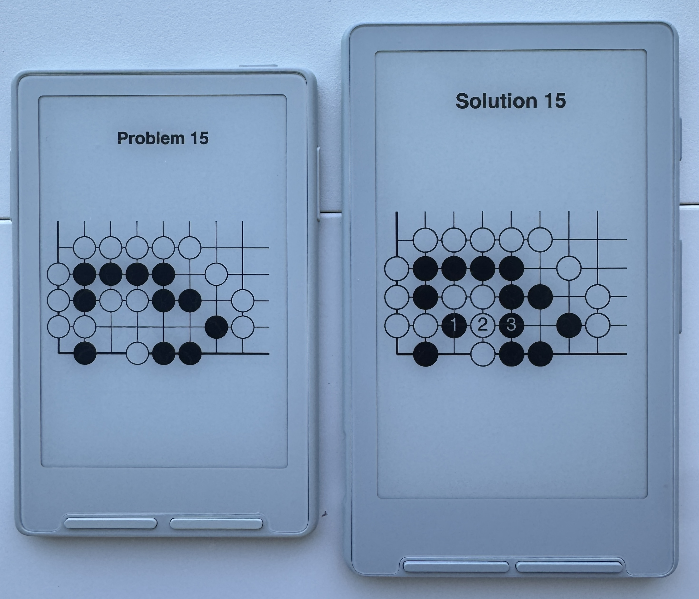

This is a selection of 106 go/weiqi/baduk booklets, featuring a total of 23,344 problems, and based on https://101books.github.io.
While 101books offers problem sets as PDFs, this site provides XTCH files formatted for Xteink X3 and X4 e-readers, as well as EPUBs intended for phone-sized e-ink devices. Each book has one puzzle per page, with a solution diagram on the following page.
The Xteink files have been tested on both X3 and X4 using the Crosspoint custom firmware, and will likely to work on stock firmware. The EPUBs have been tested on an Mooan Inkpalm 5, and should work on most e-readers with phone-like aspect ratios. For larger devices, I recommend the 101books PDFs.

Last updated May 2026